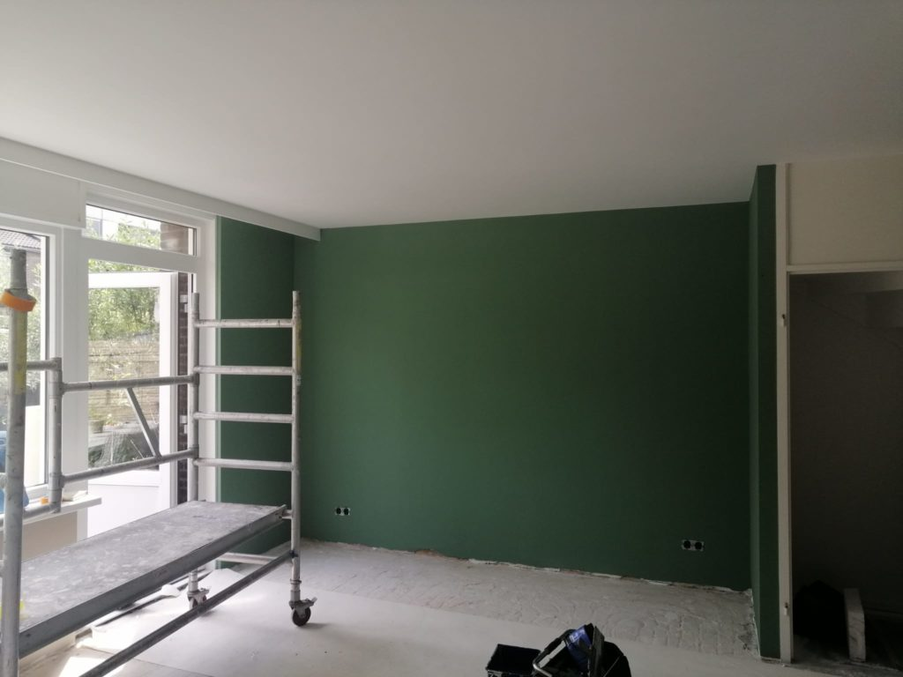

Binnen schilderwerk
Matte verf, muurverf, kalkverf of een metaallook: elke verfsoort geeft uw huis een andere uitstraling. Ik adviseer u graag welke verf het beste past, en in welke kleur.
Binnen werk ik met verf op waterbasis. Die droogt snel en geeft weinig tot geen geur af. Ik gebruik professionele verf van Sigma, Van Wijk, Wijzonol of Sikkens.
- Wanden en plafonds
- Deuren en kozijnen
- Trappen